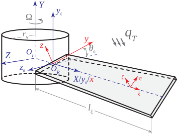

Coupled thermo-elastic dynamics of rotating pre-twisted blades exposed to thermal shock including nonlinear rotational effects
Journal of Sound and Vibration, 594, pp.118669, 2025. Journal Article

Abstract
Rotating blades operating under high-temperature experience intense mechanical and thermal stresses induced by centrifugal forces and thermal shock. In this research, to address this critical yet understudied topic, coupled thermo-elastic dynamics of rotating blades incorporating precise rotational effects is investigated. A comprehensive modeling approach, characterizing blade geometry in terms of pre-twist and pre-set angles is employed based on the theory of surfaces. Thermal strain–displacement field is defined based on third-order shear deformation theory in the model integrated with a third-order expansion of temperature change distribution within the blade. Rotational factors related to Coriolis, centrifugal stiffening, and rotational softening effects are considered. In the case of stiffening effects, two different modeling approaches including direct integration of centrifugal forces (DICFs), and pre-stressed dynamics about steady-state equilibrium deformations (SSEDs) are employed. When incorporating large-amplitude SSEDs in the latter, nonlinear rotational effects are incorporated into the model. To overcome the complexity arising from coupled thermo-elasticity, and rotational motion, the spectral Chebyshev technique is applied to the derived integral boundary value problems and coupled energy equations. Finally, natural frequencies, and thermal and centrifugal deformations are investigated comprehensively by including DICFs and pre-stressed dynamics. Results show that thermo-elastic dynamics of the system is highly affected by the modeling approaches used for centrifugal stiffening effects.